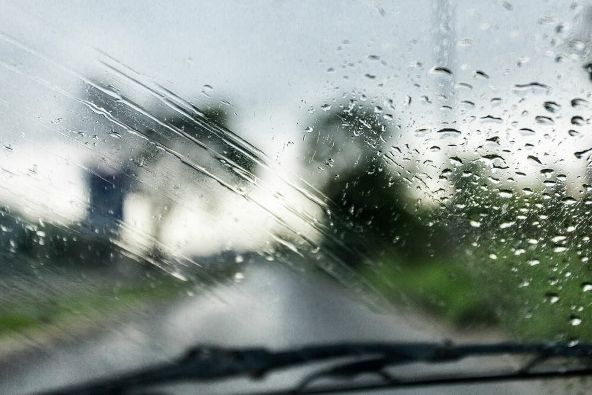
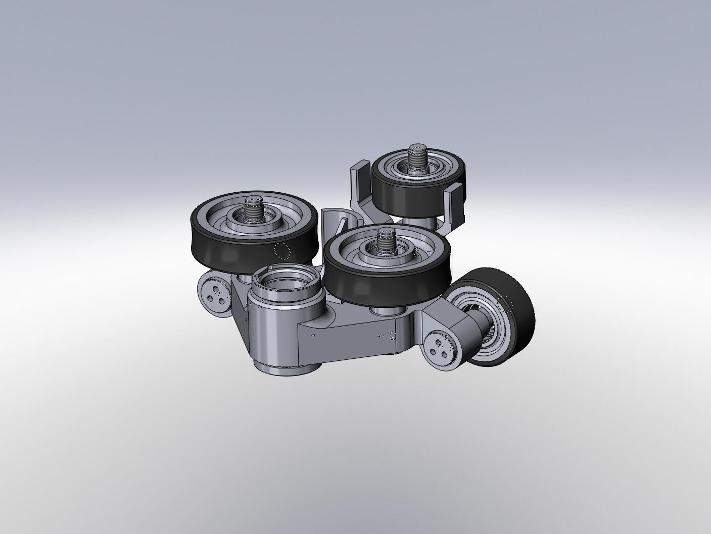

### Project Brainstorm
One of the struggles in life is when it's raining and my car's wiper is leaving streaks on the window because of trapped debris/dead plants. As someone who park his car outdoors, I often find myself in the situation where there's a constant streak left on the windshield when the car's already on the highway.


<br>
Solution: using a small wheel-based machine to run along the blade of the wiper to manually clean it while the car is still in motion.
<br>
Power: using a small battery pack that could be recharged with a solar panel.
Go back home: [link](./index.html).